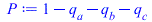
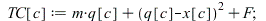
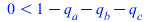
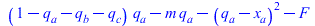
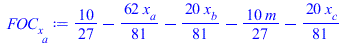
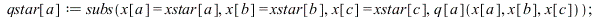
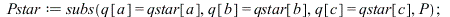
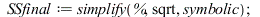
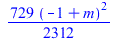
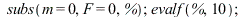

| (1) |

|  | (2) |

| (3) |

| (4) |

| (5) |

| (6) |

| (7) |

| (8) |
| (9) |
`(a, 0); 1" align="center" border="0">
| (10) |

|  | (11) |

| (12) |

| (13) |
=`(q[c], 0); 1" align="center" border="0">
| (14) |
=`(m, 0); 1" align="center" border="0">
| (15) |


| (16) |

| (17) |

| (18) |
| (19) |
| (20) |
| (21) |

| (22) |


| (23) |
| (24) |

| (25) |
| (26) |

|  | (27) |

| (28) |

|  | (29) |

| (30) |

| (31) |

| (32) |

| (33) |
| (34) |

| (35) |
| (36) |
| (37) |

| (38) |

| (39) |
| (40) |
| (41) |
| (42) |
| (43) |
| (44) |
| (45) |

| (46) |

| (47) |
| (48) |
| (49) |
| (50) |

| (51) |

| (52) |
| (53) |

| (54) |

| (55) |

| (56) |

| (57) |
| (58) |

| (59) |

|  | (60) |
| (61) |

| (62) |

| (63) |
| (64) |
| > |